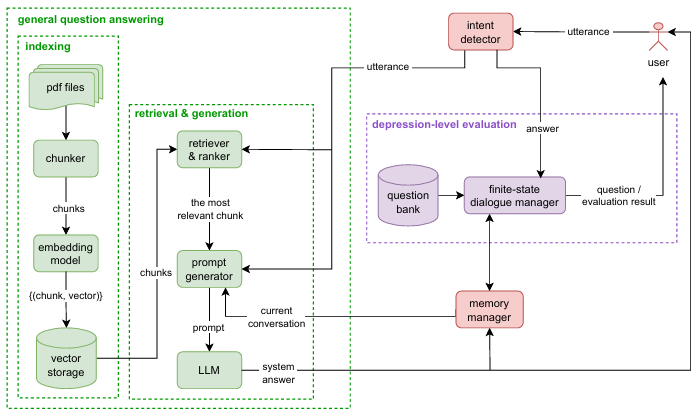
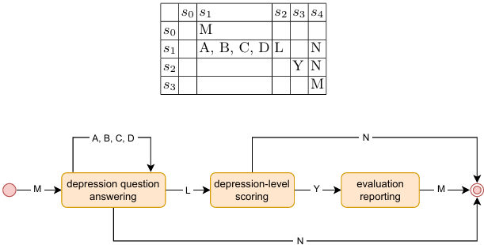
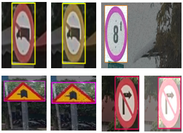
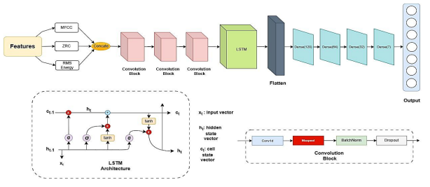
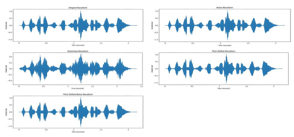
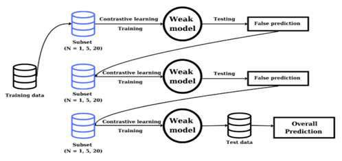
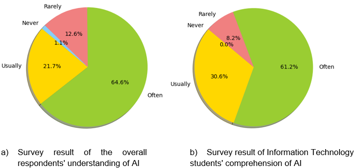
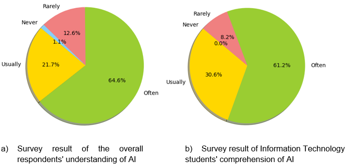
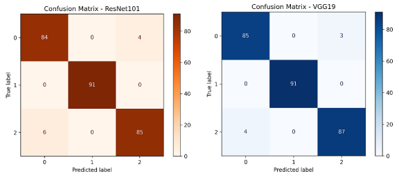
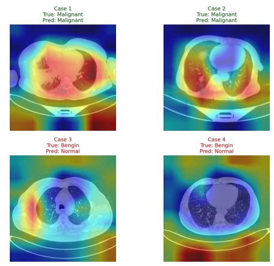

👨🎓 About Me
As a passionate AI Researcher and Engineer, I am dedicated to building intelligent systems that solve real-world problems. My interests lie in Natural Language Processing and Real life AI Application, with a focus on developing robust and efficient models.
🏆 Awards & Achievements
- Top 1 - Autonomous Car FPT, Can Tho 2023
- Top 3 - Business Challenge FPT, Can Tho 2023
- Top 8 - FPT Digital Race 2023
- Top 10 - Tra Vinh University Startup Competition 2023
- Consolation Prize - FPT Edu Research Festival 2024
- Certificate of Participation - Student Scientific Research Prize 2024
- Consolation Prize - FPT Edu Research Festival 2025
🔬 Publications
-
A Hybrid Dialogue System for Student Mental Health Assessment and Support
With the increasing prevalence of mental health issues, especially among university students, depression has emerged as a concern requiring effective support. To partially mitigate this, we develop a Vietnamese dialogue system that automates mental healthcare services for students facing significant stress...(Click the title to read more)
  -
Vietnamese Traffic Sign Detection for Advanced Driving Assistant: Comparison Between YOLOv8 and Faster RCNN
With a market size of 100 million people, autonomous vehicles are poised to become a popular solution in the world in general and in Vietnam in particular shortly. However, the self-driving car system faces a significant challenge due to the limited availability of data on the current traffic conditions in Vietnam... (Click the title to read more)

-
EMOTION RECOGNITION IN SPEECH USING CNN-LSTM NETWORKS WITH DATA AUGMENTATION AND OPTIMIZATION TECHNIQUES
Speech Emotion Recognition (SER) is a key area of affective computing that lets machines identify human emotions from vocal signals. Although there have been big advances, SER is still a challenge because of the complex nature of emotional expression...
  -
ENHANCING FEW-SHOT LEARNING PERFORMANCE WITH BOOSTING ON TRANSFORMERS: EXPERIMENTS ON SENTIMENT ANALYSIS TASKS
This study addresses challenges in sentiment analysis for low-resource educational contexts by proposing a framework that integrates Few-Shot Learning (FSL) with Transformer-based ensemble models and boosting techniques... (Click the title to read more)
 -
The Rapid Development of AI and Its Impact on Technologically Lagging Students
The rapid advancement of artificial intelligence (AI) technology brings significant opportunities and challenges in the field of education. This progress creates a disparity in access and proficiency with AI technology, especially for those unfamiliar with it... (Click the title to read more)
 

-
ROBUST LUNG NODULE CLASSIFICATION ON IMBALANCED CT DATASETS VIA TRANSFER LEARNING AND DATA AUGMENTATION
Lung cancer diagnosis from computed tomography scans is often hampered by data scarcity and significant class imbalance, undermining the reliability of deep learning models. This study presents a robust framework for multi-class lung nodule classification...
 